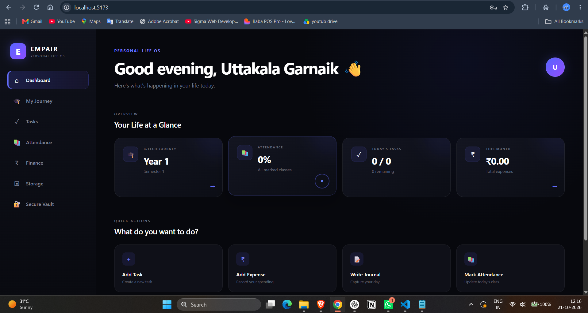

PERSONAL LIFE OS & PRODUCTIVITY
EMPAIR — Life OS
A unified personal Life Operating System engineered to streamline college life with attendance tracking, assignment schedules, daily study routines, and cognitive habit analytics.
REACT
NODE.JS
POSTGRESQL
EXPRESS